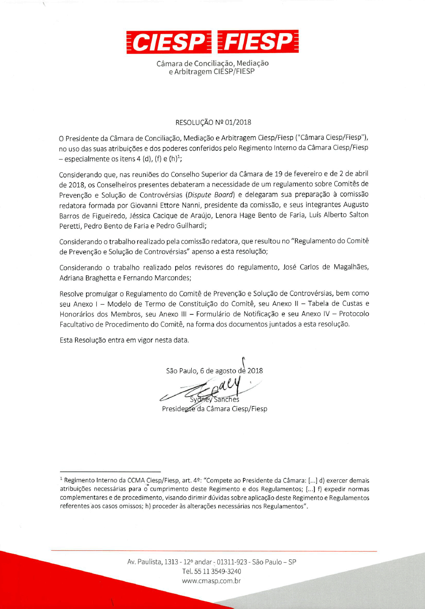

El Comité de Prevención y Solución de Controversias o bien "Comité", o CPSC es un método consensual de gestión, prevención y resolución de controversias bajo un Contrato. Al llevar a cabo sus atribuciones, el Comité establecido en virtud del Reglamento ayudará las Partes, para evitar la aparición de Controversias o resolver Conflictos que puedan surgir.
El desarrollo de las actividades del Comité requiere una estrecha cooperación entre el Comité, las Partes y los técnicos involucrados en los procedimientos. Por lo tanto, su conducta debe guiarse por los principios de la buena fe y cooperación, con miras a, principalmente, evitar la aparición de Controversias. Si eso pasa, el Comité y las Partes deben hacer sus mejores esfuerzos para resolverlas de manera rápida y eficiente, siempre priorizando siempre la composición amigable de las partes.
El Comité establecido en virtud del Reglamento tiene autonomía para definir sus propias reglas procedimentales y la metodología de trabajo en todo lo que no entre en conflicto con los términos del Reglamento, con el Contrato o con el Consenso de las Partes. En todos los casos, al ejercer sus funciones, el Comité observará los principios de la flexibilidad procesal, simplicidad, oralidad y autonomía de las Partes. Sin perjuicio, el Reglamento establece que el Comité y las Partes, si se considera conveniente, adopten las reglas procedimentales estándar sugeridas en el Protocolo Facultativo en el Anexo IV del Reglamento.
El Comité no es un tribunal arbitral y no tiene función jurisdiccional. El Comité es un órgano contractual, establecido de acuerdo con la voluntad de las Partes. Sus Pronunciamientos, Recomendaciones o Decisiones vinculan las Partes solo dentro de los límites del Contrato y el del Reglamento, generando, como toda obligación, efectos relativos entre las Partes. Las Recomendaciones o Decisiones del Comité no son sentencias arbitrales o judiciales y pueden ser sometidas a consideración por el método de solución de conflictos acordado por las Partes, ya sea arbitraje o litigio judicial.
Con el fin de proporcionar una mayor eficiencia y agilidad a la resolución final de eventuales Controversias sobre las Recomendaciones o Decisiones del Comité, se recomienda a las partes que concuerden en someter dichas disputas al arbitraje administrado por la Cámara Ciesp / Fiesp.
La Cámara Ciesp/Fiesp actuará en apoyo de los Comités sujetos al Reglamento para garantizar una administración eficiente de los trabajos, prestar apoyo de secretaría y en la gestión de costas en relación con el trabajo del Comité y actuando como autoridad nominadora de Miembros, garantizando la seguridad jurídica e institucional a la gestión de proyectos que adopten este método relevante de prevención y solución de disputas.
| TÉRMINO | DEFINICIÓN |
|---|---|
|
CÁMARA CIESP/FIESP |
Cámara de Conciliación, Mediación y Arbitraje Ciesp/Fiesp |
|
COMITÉ ad hoc |
Comité Temporal, formado en cualquier momento durante la vigencia del Contrato, para resolver una o más Controversias existentes, de conformidad con el Artículo 2.7 del Reglamento, se constituyendo y se disolviendo en los casos previstos y disposiciones aplicables del artículo 7 del Reglamento. Comité Temporal, formado en cualquier momento durante la vigencia del Contrato, para resolver una o más Controversias existentes, de conformidad con el Artículo 2.7 del Reglamento, se constituyendo y se disolviendo en los casos previstos y disposiciones aplicables del artículo 7 del Reglamento |
|
COMITÉ DE PREVENCIÓN Y SOLUCIÓN DE CONTROVERSIAS O “COMITÉ” o CPSC |
Comité compuesto por uno o más Miembros en conformidad con el Reglamento. |
|
COMITÉ HÍBRIDO O CH |
Tiene el significado dado en el artículo 5 del Reglamento. |
|
COMITÉ PERMANENTE |
Comité formado de conformidad con el Artículo 2.6 del Reglamento para actuar continuamente, constituyéndose y disolviéndose en los casos previstos y aplicables del Artículo 7 del Reglamento. Comité formado de conformidad con el Artículo 2.6 del Reglamento para actuar continuamente, constituyéndose y disolviéndose en los casos previstos y aplicables del Artículo 7 del Reglamento. Comité formado de conformidad con el Artículo 2.6 del Reglamento para actuar continuamente, constituyéndose y disolviéndose en los casos previstos y aplicables del Artículo 7 del Reglamento. Comité formado de conformidad con el Artículo 2.6 del Reglamento para actuar continuamente, constituyéndose y disolviéndose en los casos previstos y aplicables del Artículo 7 del Reglamento. |
|
COMITÉ POR ADJUDICACIÓN O CA |
Tiene el significado dado en el artículo 4 del Reglamento. |
|
COMITÉ POR REVISIÓN OU CR |
Tiene el significado dado en el artículo 3 del Reglamento. |
|
Consenso |
Acuerdo Expreso o ausencia de oposición entre las Partes. |
|
Contrato |
El contrato o contratos en base a los cuales o sobre los cuales se formará el Comité. |
|
CONTROVERSIA, DISPUTA, LITIGIO, CONFLICTO |
Disputas, reclamos, solicitudes o cualquier otro asunto relacionado con la interpretación y / o ejecución del Contrato. |
|
DECISIÓN |
Deliberación del CA o, según corresponda, CH, con respecto a una disputa. |
|
DIARIA |
Criterio para estimar los honorarios extraordinarios del Comité por celebrar Reuniones o Diligencias Extraordinarias, o por emitir una Recomendación o Decisión, de conformidad con el Artículo 4.4 del Anexo II de este Reglamento. |
|
DESACUERDO |
Notificación escrita en la que la Parte se reserva los derechos y registra su oposición a una Recomendación o Decisión. |
|
EXPOSICIÓN DEL CASO |
Exposición del caso, por escrito, formulada por la Parte autora, que se presenta a la otra Parte, a cada miembro del Comité y a la Secretaría de la Cámara Ciesp / Fiesp. |
|
FORMULARIO |
Formulario en el Anexo III del Reglamento. |
|
HONORARIOS EXTRAORDINARIOS |
Honorarios que remuneran al Comité por celebrar Reuniones o Diligencias Extraordinarias, o por emitir una Recomendación o Decisión, de conformidad con el Artículo 4 del Anexo II de este Reglamento. |
|
HONORARIOS MENSUALES |
Honorarios que remuneran al Comité por su participación en las Reuniones y Diligencias Ordinarias y por actuar en el intento de resolver amigablemente las Disputas bajo los términos del Artículo 3 del Anexo II de este Reglamento. |
|
MIEMBROS |
Persona (s) nombrada (s ) para integrar el Comité. |
|
PARTE(S) |
Parte (s) del contrato, incluidas las que aparecen en el Formulario de Notificación o Término de la Constitución. |
|
CUESTIONARIO |
Cuestionario de Conflicto de Intereses, Disponibilidad y Aceptación del Encargo, que deben completar los posibles miembros del Comité, de conformidad con el Artículo 2.8.3 del Reglamento. |
|
RECOMENDACIONES |
Deliberación del CR, o, si aplicable, CH, referente a una Controversia. |
|
REGLAMENTO |
Reglamento del Comité de Prevención y Solución De Controversias de la Cámara Ciesp/Fiesp. |
|
RESPUESTA |
Respuesta, por escrito, presentada mediante la Exposición del Caso en los términos del Artículo 13.1 del Reglamento. |
|
REUNIONES Y DILIGENCIAS EXTRAORDINARIAS |
Reuniones y diligencias no previstas en el calendario de reuniones en la forma del Artículo 8.5. |
|
REUNIONES Y DILIGENCIAS ORDINARIAS |
Reuniones y diligencias previstas en el calendario de reuniones en la forma del Artículo 8.3. |
|
TERMINO DE CONSTITUCIÓN DEL COMITÉ |
Instrumento que marca la constitución del Comité, en los términos del Artículo 7;1 del Reglamento. |
|
FECHA INICIAL |
La fecha en que la Exposición del caso sea recibida por el Presidente del Comité, en término del Artículo 12.2 del Reglamento. |
REGLAMENTO DEL COMITÉ DE PREVENCIÓN Y SOLUCIÓN DE CONTROVERSIAS
Vigente a partir de 6 de agosto de 2018.
ARTÍCULO 1 - DISPOSICIONES PRELIMINARES
1.1 El Comité, constituido de conformidad con el Reglamento, tiene como objetivo la prevención, gestión y solución de Controversias cualquiera sea su naturaleza, derivada del Contrato. El Comité estará compuesto por 1 (uno) o 3 (tres) Miembros, que serán indicados conforme el acuerdo entre las Partes, excepto en el caso de nombramiento por la Cámara Ciesp / Fiesp, según lo dispuesto en el Reglamento. La función del Comité es ayudar a las Partes a prevenir y resolver Controversias que puedan surgir en relación con el Contrato. Las partes deben determinar, según los términos del Reglamento, si el desempeño del Comité tendrá lugar en forma de Comité por Adjudicación, Comité por Revisión o Comité Híbrido.
1.2 La actuación de los Comités será gestionada por la Cámara Ciesp /Fiesp según los términos del Reglamento. Posibles controversias respecto a las Recomendaciones o Decisiones de los Comité deben resolverse preferiblemente, a través del arbitraje administrado por la Cámara Ciesp / Fiesp, sin perjuicio de que las Partes elijan otro método de resolución de disputas.
ARTÍCULO 2 - FORMACIÓN DEL COMITÉ DE PREVENCIÓN Y SOLUCIÓN DE CONTROVERSIAS
2.1. El Comité se formará de conformidad con el Reglamento y las disposiciones específicas del contrato.
2.1.1. Las Partes pueden solicitar el establecimiento de un Comité con base en múltiples contratos relacionados con la misma empresa enviando un Formulario de Notificación conjunto.
2.2. Las Partes interesadas en formar un Comité deberán notificar por escrito a la cámara Ciesp / Fiesp, utilizando el formulario de notificación en el anexo III del Reglamento, y debe indicar el tipo de Comité, es decir, Permanente o ad hoc, así como la modalidad de desempeño del Comité, es decir, ya sea CA, CH o CR, recolectando la tasa de registro de conformidad con el Anexo I de este Reglamento.
2.3. Si hay una disposición en el Contrato para la formación de un Comité del Reglamento, cualquier Parte puede presentar el Formulario de Notificación.
2.4. El Comité debe estar compuesto por 1 (uno) o 3 (tres) Miembros, según lo determine el Contrato o Consenso.
2.5. En caso de silencio del contrato y ausencia de consenso sobre el número de Miembros, modalidad y tipo de Comité, la Cámara Ciesp / Fiesp elegirá el número de Miembros para componer el Comité, después de escuchar a las Partes, siendo la modalidad CA y el tipo de Comité Permanente.
2.6. A menos que se estipule lo contrario en el Contrato o por Consenso, el Formulario de Notificación mencionado en el Artículo 2.2 deberá ser presentado dentro de los 30 (treinta) días posteriores a la celebración del Contrato, exceptuada la hipótesis de un Comité ad hoc, que puede presentarse en cualquier momento, de conformidad con el Artículo 2.7 del Reglamento.
2.7. Si se determina expresamente en el Contrato, o por Consenso, el Comité puede formarse como un Comité ad hoc en cualquier momento, para resolver una o más disputas especificadas por las Partes, mediante notificación escrita de conformidad con el Artículo 2.2 del Reglamento.
2.8. El Comité con 3 (tres) Miembros se formará de la siguiente manera:
2.8.1 Dentro de los 30 (treinta) días posteriores a la recepción del Formulario de Notificación de la Cámara Ciesp / Fiesp, las Partes nominarán conjuntamente a dos Miembros del Comité, o cada cual nominará individualmente a un Miembro.
2.8.2. En el caso de que el Contrato o el Formulario de Notificación presente más de dos Partes, todos los involucrados se esforzarán por alcanzar Consenso, dentro de hasta 30 (treinta) días siguientes al recibimiento del Formulario de Notificación, respecto a la indicación de dos Miembros. En la ausencia de Consenso en el plazo especificado, la Cámara Ciesp/Fiesp nominará todos los Miembros del Comité, observado el dispuesto en el Artículo 2.10 del Reglamento.
2.8.3. La Cámara Ciesp / Fiesp informará a las Partes y posibles Miembros del Comité las indicaciones hechas, solicitándoles que completen el Cuestionario dentro de los 10 (diez) días.
2.8.4. Posteriormente, la Cámara Ciesp / Fiesp notificará a las Partes acerca de los cuestionarios rellenados. En el caso de indicación individual de uno de los miembros del Comité, cada Parte tendrá 15 (quince) días desde la recepción de la notificación de los Cuestionarios para manifestar por escrito y con justificaciones, cualquier objeción a la indicación de la otra Parte, impugnando al Miembro indicado. Tales impugnaciones se resolverán según lo establecido en el artículo 6.6 del Reglamento. Pasado el plazo para la presentación de impugnación, se supone que se acepta la indicación.
2.8.5. En caso de objeción, por una Parte, a la indicación de un miembro del Comité debidamente aceptada,la otra Parte tendrá 10 (diez) días para presentar una nueva indicación, contados a partir del recibimiento de la decisión sobre la objeción.
2.8.6. Dentro de los 15 (quince) días desde el envío, por la Cámara Ciesp/Fiesp, de notificación del nombramiento de dos Miembros, estos deben indicar un tercer Miembro, que presidirá el Comité. Si los dos Miembros no indiquen a un tercero dentro del período especificado arriba, la designación se hará por la Cámara Ciesp / Fiesp, observado lo dispuesto en el Artículo 2.10 del Reglamento.
2.9. Caso las Partes hayan acordado que el Comité estará compuesto por 1 (un) Miembro, las Partes deben concordar con la indicación del Miembro único, indicándole dentro de los 30 (treinta) días a partir de la fecha de recibo del Formulario de Notificación por la Cámara Ciesp / Fiesp. Si las Partes no llegan a un consenso sobre la indicación del Miembro único en el plazo dado, a Cámara Ciesp/Fiesp hará el nombramiento, observado el dispuesto en el Artículo 2.10 del Reglamento.
2.10. Si las Partes o Miembros no alcanzan el Consenso, o por cualquier razón se abstiene de nominar Miembros o Miembro Único del Comité, en conformidad con los artículos 2.8.1, 2.8.2, 2.8.6 y 2.9, la Cámara Ciesp / Fiesp procederá a la elección de los Miembros.
2.11. En caso de reemplazo de cualquiera de los miembros del Comité por fallecimiento, renuncia, revocación de su mandato, o remoción por el Presidente de la Cámara Ciesp / Fiesp, el nuevo miembro del comité debe ser designado de la misma manera que el Miembro reemplazado. Si, dentro de los 15 (quince) días a partir de la información sobre la muerte, renuncia o revocación del mandato, no haya, por cualquier motivo, nombramiento del nuevo Miembro del Comité, será la Cámara Ciesp/Fiesp que designará al nuevo Miembro del Comité, observando las disposiciones del Artículo 2.10 del Reglamento.
2.12. Todos los actos realizados por el Comité antes de la sustitución de cualquiera de sus miembros seguirán siendo válidos después de su reemplazo, a menos que la nueva formación del Comité entienda que hay actos que han sido afectados por las razones que llevaron a la remoción de los Miembros reemplazados.
2.13. Hasta el reemplazo efectivo, los miembros restantes del Comité deben abstenerse de celebrar audiencias y emitir decisiones o recomendaciones sin el acuerdo expreso de las Partes.
2.14. Cuando el nombramiento de un miembro del Comité recae en la Cámara Ciesp / Fiesp, se llevará en cuenta las calificaciones del candidato relevante para el caso, su disponibilidad, nacionalidad y conocimiento lingüístico. También se podrá tener en cuenta cualquier observación, comentarios o solicitudes de las Partes.
ARTÍCULO 3 - COMITÉ DE REVISIÓN (CR)
3.1. Comités formados en forma de CR emiten Recomendaciones con el objetivo de prevenir y resolver disputas. Los CR también pueden proporcionar asistencia informal a las Partes, en los términos del artículo 11.
3.2. Con excepción de la hipótesis prevista en el Artículo 3.4 de este Reglamento, las recomendaciones no son vinculantes ni definitivas en relación a las partes.
3.3. Las partes pueden cumplir con la Recomendación al recibirla, o - dentro de los 15 (quince) días posteriores a la recepción de la Recomendación o de correcciones y aclaraciones previstas en el artículo 18 del Reglamento, lo que ocurrir por último-, expresar su desacuerdo mediante notificación a la otra Parte, al CR y a la Cámara Ciesp / Fiesp. Dicha notificación puede indicar, para información, las razones del Desacuerdo de la Parte en cuestión.
3.4. En la ausencia de cualquier manifestación de desacuerdo, la Recomendación será final y vinculante y debe ser cumplida de inmediato por las Partes.
3.5. Si se presenta un desacuerdo, la Recomendación no será final y vinculante y la controversia debe ser definitivamente resuelta, preferiblemente, mediante arbitraje administrado por la Cámara Ciesp / Fiesp, sin perjuicio de que las Partes elijan otro método de resolución de disputas.
ARTÍCULO 4 - COMITÉ DE ADJUDICACIÓN (CA)
4.1. Los Comités constituidos en forma de CA toman decisiones apuntando a resolver disputas. Los CA también pueden proporcionar asistencia informal a las Partes de conformidad con el Artículo 11.
4.2. La Decisión es efectiva de inmediato y obliga a las Partes, a partir de su recibo, independientemente de la manifestación de Desacuerdo.
4.3. La Parte que no esté de acuerdo con la Decisión, dentro de los próximos 15 (quince) días de su recibimiento o del recibimiento de la resolución prevista en el Artículo 18 del Reglamento, lo que ocurrir por último, enviar a otra Parte, al CA y la Cámara Ciesp / Fiesp, su Desacuerdo sobre la Decisión. Dicha notificación puede indicar, para información, las razones del Desacuerdo de la Parte en cuestión.
4.4. Si ninguna de las Partes presente su desacuerdo en relación con la Decisión según lo dispuesto en el Artículo 4.3, la Decisión, además de ser vinculante, será final en relación con las Partes.
4.5. En caso de desacuerdo, la controversia debe ser resuelta definitivamente, preferiblemente mediante Arbitraje administrado por la Cámara Ciesp / Fiesp, sin perjuicio de que las Partes elijan otro método de resolución de disputas.
ARTÍCULO 5 - COMITÉ HÍBRIDO (CH)
5.1. Comités constituidos en forma de CH emiten Recomendaciones para prevenir y resolver disputas bajo los términos del artículo 3 del Reglamento y, excepcionalmente, tomar decisiones, de conformidad con el artículo 4 del Reglamento. Los CH también pueden prestar asistencia informal a las Partes, de conformidad con el Artículo 11 del Reglamento.
5.1.1 Las Recomendaciones hechas por el CH son de la misma naturaleza y efectos de las Recomendaciones a que se refiere el artículo 3 del Reglamento, siguiendo lo que hay sobre el procedimiento aplicable.
5.1.2. Las Decisiones tomadas por el CH son de la misma naturaleza y efectos de las Decisiones a que se refiere el artículo 4 del Reglamento, siguiendo lo que consta sobre el procedimiento aplicable.
5.2. Si una de las Partes solicita que la Decisión sea emitida por el CH con respecto a una Disputa en particular, y si ninguna otra Parte se oponga a dicha solicitud dentro de los 5 (cinco) días, el CH proferirá una Decisión.
5.3. Si una de las Partes solicita que la Decisión sea emitida por el CH y cualquier otra Parte se oponga a la solicitud dentro del plazo previsto en el Artículo 5.2 del Reglamento, el CH, de forma definitiva y fundada decidirá si emitirá una Recomendación o manifestará una Decisión. Por lo tanto, el CH debe tener en cuenta, entre otros que considere igualmente relevantes, los siguientes factores:
(a) urgencia de la situación u otras consideraciones pertinentes, pues la Decisión facilitará la ejecución del Contrato o evitará una pérdida material o perjuicio relevante a cualquiera de las Partes;
(b) si la Decisión evitará interrumpir la ejecución del Contrato; y
(c) si la Decisión es necesaria para la preservación de evidencias.
5.4. Cualquier solicitud de recomendación o Decisión de la Parte que presenta una controversia al CH debe ser formulada en la Exposición del Caso, previsto en el artículo 12 del Reglamento. Cualquier requisito similar que provenga de otra Parte deberá ser formulado, por escrito, hasta la presentación de la Respuesta de la Parte en cuestión, como dispuesto en el artículo 13 del Reglamento.
ARTÍCULO 6 - MIEMBROS DEL COMITÉ
6.1. El Comité estará compuesto por profesionales bajo los términos de la convención de las Partes. Cabe el nombramiento de Miembros, por cualquier razón, a la Cámara Ciesp/Fiesp, de acuerdo con el Artículo 2.14 del Reglamento.
6.2. Todos los miembros indicados a integrar el Comité deben firmar la Declaración de Independencia y disponibilidad y comunicar de inmediato -por escrito, a las Partes, a los demás Miembros del Comité y a la Secretaría de la Cámara Ciesp/Fiesp-, todos los hechos y circunstancias que puedan poner en duda ante las Partes su independencia e imparcialidad, incluidas las que puedan surgir durante su mandato.
6.3. Al aceptar su nombramiento, todo Miembro del Comité se compromete a desempeñar sus funciones de conformidad con este Reglamento.
6.4. Todo Miembro del comité preservará el equilibrio de participación y poder de decisión entre las Partes, procediendo imparcialmente, con competencia, diligencia, sigilo y celeridad.
6.5. A menos que las Partes acuerden lo contrario o se imponga una exigencia por ley aplicable, toda la información obtenida por el miembro del comité en el ejercicio de sus funciones se utilizará exclusivamente para las actividades del Comité, y debe tratarse como confidencial.
6.6. Si una Parte impugnar a un Miembro del Comité, debe hacerlo mediante previa solicitud a la Cámara Ciesp / Fiesp, dentro de 15 (quince) días contados a partir del conocimiento de los hechos que motivan a la impugnación. El asunto será decidido por un árbitro que sea miembro del cuadro de Árbitros de la Cámara Ciesp / Fiesp, nombrados por el Presidente de la Cámara, en el plazo de 30 (treinta) días a contar de su aceptación o del recibimiento por el árbitro de la última manifestación sobre el asunto, lo que ocurrir por último. Se respetará el derecho de manifestación del impugnado, de los demás Miembros del Comité y de las demás Partes involucradas.
6.7. Si se confirma una impugnación de un Miembro del Comité, el Miembro debe ser reemplazado siguiendo el mismo procedimiento adoptado en el nombramiento, en conformidad con el artículo 2 del Reglamento.
6.8. A menos que las Partes acuerden lo contrario, el Miembro del Comité no puede actuar en ningún procedimiento judicial, arbitral o similar relacionado con la controversia sometida al Comité, ya sea como árbitro, experto, testigo técnico o fático, representante o consejero de una de las partes.
6.9. Corresponderá al alcalde de Ciesp / Fiesp, a solicitud de cualquiera de las Partes, decidir sobre la remoción de cualquier Miembro en caso de incumplimiento de sus atribuciones o cuando no as realiza en conformidad con el Reglamento o con el Término de Constitución del Comité.
ARTÍCULO 7 - CONSTITUCIÓN Y EXTINCIÓN DEL COMITÉ
7.1. El Comité se constituirá mediante la ejecución del Término de Constitución del Comité (véase el modelo en el Anexo I), que se firmará por las Partes, cada uno de los miembros del Comité y por un representante de la Cámara Ciesp / Fiesp.
7.2. La celebración del Término de Constitución del Comité marcará el comienzo de las actividades del Comité.
7.3. El Comité se extinguirá:
(a) en cualquier momento, por decisión conjunta de las Partes, sin justificación y con efecto inmediato; o
(b) en el caso de un Comité ad hoc, una vez resuelta la(s) Controversia(s) sobre la(s) cual(es) fue constituido.
7.4. Las Partes pueden, por consenso, reemplazar a los Miembros del Comité, comunicando a todos los Miembros por correspondencia, en conformidad con el artículo 10.1.
ARTÍCULO 8 - PROCEDIMIENTO DEL COMITÉ
8.1. Las disposiciones del artículo 8 se aplican al Comité Permanente, a menos que se acuerde de otra forma en Término de Constitución del Comité. El Comité ad hoc se llevará a cabo de la manera determinada por los Miembros, aplicando, en su caso, las disposiciones del Artículo 8 del Reglamento
8.2. Después de la constitución del Comité, las Partes deberán proporcionar continuamente la información necesaria para que se mantenga actualizado sobre las circunstancias del Contrato y su ejecución.
8.2.1. Los miembros del comité se comprometen a permanecer actualizados continuamente sobre las circunstancias del Acuerdo y sobre el progreso de su ejecución.
8.3. Al comienzo de sus actividades, el Comité consultará a las Partes para establecer un calendario de reuniones, diligencias y, si es necesario, dependiendo de la naturaleza del contrato, visitas a lugares de cumplimiento de la obligación relevante del Contrato ("Reuniones y Diligencias Ordinarias").
8.4. El Comité debe participar en reuniones y visitas a los locales de cumplimiento de la obligación pertinente del Contrato, con las Partes comunicadas con anticipación.
8.5. Además de las Reuniones y Diligencias Ordinarias, cualquiera de las Partes puede solicitar reuniones o diligencias adicionales o urgentes ("Reuniones y Diligencias Extraordinarias").
8.5.1. En el caso de solicitud de "Reuniones y Diligencias Extraordinarias", si no hay una estipulación diferente en el Término de Constitución, el Comité estimará los Honorarios Extraordinarios y costas involucrados, informando a las Partes y a la Secretaría de la Cámara Ciesp / Fiesp para que realice el cobro de las costas, sin perjuicio de complementación o de devolución de los valores excedente de las partes.
8.5.2. Cuando se pagan Honorarios Extraordinarios y las otras costas involucrados, la Secretaría de la Cámara Ciesp / Fiesp informará al Comité y a las Partes.
8.5.3. A menos que el Comité indique lo contrario, la Reunión o la Diligencia Extraordinaria solo empezará después del pago completo de los Honorarios Extraordinarios previstos en el anexo II del presente Reglamento.
8.6. Después de cada reunión y diligencia, el Comité redactará un acta de la reunión o bien un informe.
ARTÍCULO 9 - PODERES DEL COMITÉ
9.1. El procedimiento ante el Comité se regirá por el presente Reglamento y, en su silencio, por todas las reglas que el Contrato, el Término de Constitución, las Partes o, en su defecto, el Comité establecer, observando los principios de igualdad de trato de las Partes y el adversario. En ausencia de una convención de las Partes, el Comité podrá definir las reglas que regirán los trabajos y tomar todas las medidas necesarias para ejercer sus funciones de Comité, incluyendo, pero no limitando a:
(a) Determinación del idioma de los procedimientos ante el Comité;
(b) Forma y regularidad de la presentación de documentos al Comité;(c) Convocatoria de reuniones, visitas y audiencias, su forma y regularidad
(d) Cuestiones de procedimiento planteadas por las Partes; y
(e) Todas las medidas necesarias para el ejercicio de las funciones del Comité
9.1.1. Si se considera conveniente, el Comité o las Partes mediante Consenso, pueden adoptar las reglas de procedimiento sugeridas en el Protocolo Facultativo que figura en el Anexo IV del Reglamento.
9.2. Las deliberaciones del Comité sobre las normas que rigen el procedimiento deben tomarse por mayoría de votos. Si no hay mayoría, prevalecerá el voto del Presidente del Comité.
9.3. En cumplimiento de su obligación de mantener la confidencialidad de las informaciones presentadas, el Comité debe tomar medidas para proteger sigilos comerciales e informaciones confidenciales.
9.4. Si el Contrato tiene más de dos Partes, la aplicación del presente Reglamento puede adaptarse a la situación multilateral, en la forma apropiada, por convención de todas las Partes o, en su defecto, por el Comité.
ARTIGO 10 – COMUNICACIONES, PLAZOS E ENTREGAS DE DOCUMENTOS
10.1 A menos que el Término de Constitución disponga lo contrario, las comunicaciones pueden hacerse por cualquier medio acordado entre las Partes en las direcciones indicadas en el Término de Constitución y posteriormente confirmado por correo con aviso de recibimiento o usar otros medios o plataformas de comunicación electrónica hábiles, elegidas por las Partes.
10.2 Todas las comunicaciones de las Partes se enviarán por escrito. Antes de la Constitución del Comité, todas las declaraciones y documentos serán enviados a la Cámara Ciesp / Fiesp por carta, correo electrónico o equivalentes. Después de la Constitución del Comité, las Partes y los Miembros deben enviar todas las declaraciones y documentos directamente a las Partes, a los Miembros y a la Cámara Ciesp / Fiesp.
10.3 Los plazos del Reglamento se suspenderán durante el período de vacaciones colectivas de la Cámara Ciesp / Fiesp. Sin embargo, el Comité estará disponible a las Partes para celebrar Reuniones y Diligencias Extraordinarias o Recomendaciones / Decisiones de urgencia, si es necesario. El presidente del Comité será responsable por la guardia de actas y materiales producidos en las vacaciones, y los entregará a la Cámara Ciesp/ Fiesp al final del período para que la organización interna sea retomada.
ARTÍCULO 11 - ASISTENCIA INFORMAL PARA DISPUTAS
11.1 La asistencia informal puede llevarse a cabo
(i) verbalmente entre el Comité y las Partes;
(ii) en una reunión entre el Comité y una de las Partes, con el consentimiento previo de las partes;
(iii) a través de opiniones informales dadas por el Comité a las Partes o
(iv) de cualquier otra forma de asistencia que pueda auxiliar a las Partes a solucionar o evitar una Disputa.
11.2 La asistencia informal, en cualquiera de sus formas, escrita o verbal, de ninguna manera vinculará al Comité, si se presente la misma cuestión para Recomendación o Decisión, en los términos del presente Reglamento.
ARTÍCULO 12 - PRESENTACIÓN FORMAL DE DISPUTAS PARA RECOMENDACIÓN O DECISIÓN Y EXPOSICIÓN DEL CASO
12.1 La Parte que desea presentar una Disputa al Comité para Recomendación o Decisión presentará a la (s) otra (s), a cada Miembro del Comité y a la Secretaría de la Cámara Ciesp / Fiesp una exposición, por escrito, de la Controversia ("Exposición del caso").
12.2 La fecha en que el Presidente recibe la presentación del caso por el Presidente del comité se considerará, a todos los efectos, el plazo inicial del procedimiento para la solución de la Controversia.
12.3 Las Partes permanecen libres para, en cualquier momento, realizar transacciones sobre la Controversia, con o sin la asistencia del Comité, siendo el Comité y la Secretaría de la Cámara Ciesp / Fiesp debidamente notificados. Después de notificada cualquier transacción, el Comité no emitirá ninguna Recomendación o Decisión sobre la Controversia.
ARTÍCULO 13 - RESPUESTA Y DOCUMENTOS COMPLEMENTARIOS
13.1 A menos que las Partes acuerden lo contrario o por instrucciones contrarias del Comité, la Parte requerida deberá presentar una respuesta por escrito a la exposición del caso ("Respuesta"), dentro de los 15 (quince) días posteriores al recibo de la Exposición del Caso.
ARTÍCULO 14 - ORGANIZACIÓN Y CONDUCTA DE LAS AUDIENCIAS
14.1 Se pueden celebrar audiencias para la instrucción de Controversias, a menos que las Partes y el Comité hayan acordado de manera diferente, respetando los principios de igualdad entre las Partes, amplia defensa y contestación.
ARTÍCULO 15 - ORGANIZACIÓN Y PLAZO PARA LA EMISIÓN DE RECOMENDACIÓN O DECISIÓN
15.1 Recibida la Presentación del Caso o Respuesta, lo que ocurrir, por último, el Comité debe estimar los Honorarios Extraordinarios y
costas necesarias para emitir la Decisión o Recomendación en cumplimiento a la Exposición del Caso, informando a las Partes y a la Secretaría de la Cámara Ciesp/Fiesp para recoger los valores necesarios.
15.1.1. A menos que el Comité indique lo contrario, las Recomendaciones o las Decisiones solo se pronunciarán después del pago total de Honorarios Extraordinarios previstos en el Anexo II del presente Reglamento.
15.1.2. La fecha en que la Secretaría de la Cámara Ciesp / Fiesp informe el Comité y a las Partes el anticipo total de los Honorarios Extraordinarios e de las costas, se considerarán para todos propósitos, el plazo inicial de la fecha límite del Comité para emitir la Recomendación, el plazo inicial de la fecha límite del Comité para emitir la Recomendación o Decisión.
15.2 El Comité puede, en cualquier momento, solicitar a una Parte que proporcione aclaraciones o documentos adicionales por escrito, o documentación complementaria para ayudarlo a preparar su Decisión o Recomendación. También puede designar una fecha para aclaraciones orales y, para ello, debe convocar a todas las Partes interesadas.
Cada una de estas solicitudes debe ser comunicada por el Comité de las Partes, con copia a la Secretaría de la Cámara Ciesp / Fiesp, por escrito.
15.3 El Comité debería emitir su Recomendación o Decisión tan pronto como sea posible, y, en cualquier caso, en un plazo máximo de 30 (treinta) días a partir del Término Inicial definido en el Artículo 12.2. El plazo referido podrá prorrogarse a pedido del Comité, dada la naturaleza y la complejidad de la Controversia, así como otras circunstancias pertinentes.
ARTÍCULO 16 - CONTENIDO DE LA RECOMENDACIÓN O DECISIÓN
16.1 Las Recomendaciones o Decisiones deben indicar el nombre de las partes, la fecha en que se emitieron, las conclusiones del Comité, bien como las razones que los justificaron. En el caso de CH, se debe constar exposición razonada sobre la naturaleza de la resolución en cuestión, es decir, ya sea Decisión o Recomendación.
16.2 Las Recomendaciones o Decisiones también incluirán y la distribución de costas, gastos y honorarios resultantes de la presentación de la Controversia
16.2.1. Cualquier reembolso se realizará de conformidad con el artículo 5.8 del anexo II del presente Reglamento.
ARTÍCULO 17 - DELIBERACIÓN DE LA RECOMENDACIÓN O DECISIÓN
17.1 Si el Comité está compuesto por 3 (tres) Miembros, el Comité debe hacer esfuerzos para decidir por unanimidad. Si la unanimidad no se puede lograr, se emitirá la Recomendación o Decisión por mayoría. Caso no se obtenga la mayoría, el Comité comunicará a las Partes que no tuvo éxito en decidir la cuestión y puede recomendar el sometimiento de la Controversia a la forma de resolución de disputas prevista contractualmente.
ARTÍCULO 18 - CORRECCIÓN Y ACLARACIÓN SOBRE LA RECOMENDACIÓN O DECISIÓN
18.1 Por iniciativa propia o a solicitud de las Partes, el Comité podrá corregir cualquier error material, de cálculo o tipográfico, o errores similares encontrados en la Recomendación o Decisión, siempre que dicha corrección se presente a las Partes dentro de los 15 (quince) días a partir de la fecha de emisión de la Recomendación o Decisión.
ARTÍCULO 19 - ADMISIBILIDAD DE RECOMENDACIÓN O DECISIÓN EN PROCEDIMIENTOS POSTERIORES
19.1 A menos que las Partes acuerden lo contrario, una Recomendación o Decisión será admisible como prueba en cualquier procedimiento posterior, siempre que todas las Partes de este procedimiento posterior hayan sido Parte en el procedimiento del Comité en el cual se ha emitido una Recomendación o Decisión.
ARTÍCULO 20 - COSTAS
20.1 La Cámara Ciesp / Fiesp preparará una Tabla de Costas y Honorarios de los Miembros de los Comité y demás gastos, estableciendo el modo y la forma de pago (véase el Anexo II del presente Reglamento).
20.2 La tabla mencionada en el artículo 20.1 puede revisarse periódicamente por la Cámara Ciesp / Fiesp, aplicándose a los Comités a partir de su divulgación.
20.3 Todos los gastos incurridos y efectuados desde la fecha de constitución del Comité hasta su disolución deben ser soportados igualmente por las Partes, excepto la hipótesis de solicitud unilateral de Reuniones o Diligencias Extraordinarias, Recomendaciones o Decisiones, acuerdo distinto de las Partes o determinación del Comité.
20.4 La falta de pago por parte de una de las Partes de la cuota respectiva del anticipo o del pago efectivo de la tarifa mensual, honorarios y/o gastos, dentro de los 30 (treinta) días posteriores a la recepción del documento de cobro de la Cámara Ciesp / Fiesp, autorizar esta última, sin perjuicio de otros derechos, a suspender los servicios del Comité después de 15 (quince) días del envío de la notificación de suspensión a las Partes y Miembros del Comité. La suspensión permanecerá vigente hasta el pago total de todos los valores impagos. La responsabilidad por el pago de los Honorarios de los Miembros y gastos del comité es exclusiva de las Partes. La Cámara Ciesp / Fiesp no responde en caso de falta de pago de honorarios o del Fondo de Gastos.
20.5 La falta de pago de Honorarios Extraordinarios y eventuales gastos de la Parte que solicitó unilateralmente la Reunión o Diligencia Extraordinaria, Recomendación o Decisión resultará en que no haya la apreciación de la controversia por los Miembros del Comité, a menos que la otra Parte pague dichas costas.
20.6. Si una de las Partes no paga a la Cámara Ciesp / Fiesp, hasta la fecha determinada, su parte de los honorarios y gastos, la otra Parte puede, sin implicar una renuncia a sus derechos, efectuar pago del importe pendiente. La Parte que efectúe tal pago tendrá el derecho, sin perjuicio de los demás, a ser reembolsado por la Parte no pagadora, de todas las costas pagadas para ese propósito, de conformidad con los términos de la ley.
ARTÍCULO 21 - DISPOSICIONES GENERALES
21.1 En ningún caso serán Miembros o la Cámara Ciesp / Fiesp y / o sus empleados responsables de cualquier daño relacionado a las actividades del Comité. Las partes asumen más plena y total responsabilidad de indemnizar a los miembros del Comité, Cámara Ciesp / Fiesp y / o sus empleados por cualquier daño relacionado a las actividades del Comité respectivo.
21.2 En todos los casos no previstos expresamente en el Reglamento, el Comité debe proceder de acuerdo con los objetivos que guían el Reglamento, haciendo sus mejores esfuerzos para garantizar que las Recomendaciones o Decisiones se emitan rápidamente y de acuerdo con el Reglamento, el Contrato y la ley aplicable.
21.3 La Cámara Ciesp / Fiesp puede negarse a administrar el Comité si el Contrato establece normas incompatibles con la conducta los trabajos y organización administrativa de la Cámara Ciesp / Fiesp.
Partes en este Término de Constitución del Comité de Solución de Controversias ("Término de Constitución del Comité"):
Miembro[s] del Comité
1. [nombre completo, calificación y dirección] (Presidente/Miembro único);
2. [nombre completo, calificación y dirección] (Miembro); y
3. [nombre completo, calificación y dirección] (Miembro),
en adelante denominados colectivamente "Miembros del Comité", por un lado
y
Parte 1 [[nombre completo y dirección], y
Parte 2 [[nombre completo y dirección], por otro
[otras partes, si las hay]
en adelante denominados colectivamente "Partes".
Considerando:
Que las Partes celebraron un contrato en [...] ("Contrato") con miras a [objetivo del contrato o nombre del proyecto], que debe cumplirse en ... [ciudad y país donde debe cumplirse el contrato];
[otros contratos, si los hay]
Que el Contrato establece que las Partes deben presentar las Controversias respectivas a un [CR / CA / CH], de conformidad con el Reglamento del Comité para la Prevención y Solución de Controversias de la Cámara Ciesp / Fiesp (el "Reglamento"), y
Que las personas abajo firmantes han sido nombradas para servir como miembros del Comité,
Los miembros del Comité y las Partes acuerdan lo siguiente:
Artículo 1 – Objeto
1.1. El objeto de este Término de la Constitución es regular la relación legal de naturaleza contractual que ahora se establece entre las Partes incluidas en el Contrato y los miembros del Comité. El procedimiento para analizar, revisar y resolver disputas está regulado en el Reglamento, que es documentos aparte.
Artículo 2 – Compromiso
2.1. Los miembros del Comité se comprometen a desempeñar sus funciones de conformidad con las disposiciones del Contrato, del Reglamento y de este Término de Constitución. Los miembros del Comité declaran que son y seguirán siendo independientes de las Partes e imparciales en la conducción del procedimiento y con respecto a la decisión emitida.
2.2. Los miembros del Comité declaran que están disponibles para cumplir con las disposiciones del Contrato, el Reglamento y de este Término de Constitución.
2.3. Los miembros del Comité declaran ser profesionales con experiencia en relación con el Contrato y su ejecución.
Artículo 3 – Composición del Comité y datos de contacto
3.1 Los miembros del Comité se indican a continuación y se puede contactar de la siguiente manera:
Presidente: [nombre, dirección, teléfono y correo electrónico]
Miembro del Comité: [nombre, dirección, teléfono y correo electrónico]
Miembro del Comité: [nombre, dirección, teléfono y correo electrónico]
Las Partes son las arriba indicadas y sus datos para contacto son los siguientes:
Parte 1: [nombre, dirección, teléfono y correo electrónico]
Parte 2: [nombre, dirección, teléfono y correo electrónico]
[otras partes, si las hay]
3.2 Cualquier cambio en los datos de contacto debe comunicarse de inmediato a todos los involucrados, suponiendo que la comunicación dirigida a la persona que no informó el cambio en los datos de contacto respectivos haya sido recibida.
Artículo 4 - Calificaciones
4.1 Con respecto a cualquier Miembro del Comité designado por las Partes, las Partes abajo firmantes reconocen que dicho Miembro tiene las calificaciones profesionales y el conocimiento lingüístico necesarios para cumplir con sus obligaciones como Miembro del Comité, de conformidad con el Reglamento y / o Contrato.
Artículo 5 – Costas e Honorarios
5.1. Las Partes dividirán en partes iguales las costas administrativas de la Cámara Ciesp / Fiesp, así como las Tarifas mensuales de los miembros del Comité, según lo dispuesto en el Artículo 20 del Reglamento. [Si las Partes desean adaptar las disposiciones relativas a los honorarios de los Miembros]
5.2 Las Partes y los Miembros acuerdan que las Tarifas mensuales de los Miembros corresponderán a [●], [figura en cifras y en su totalidad].
5.3 Las Partes y los Miembros acuerdan que los honorarios extraordinarios de los miembros, cuando vencen, corresponderán al monto fijo de [●], [monto en cifras y en su totalidad].
[o]
5.3 Las Partes y los Miembros acuerdan que los honorarios extraordinarios de los miembros, cuando vencen, serán estimados por el Comité en función del número de jornadas necesarias para completar la cuota solicitada, considerando que el valor de cada día corresponde a [●], [valor en cifras y palabras]
Artículo 6 - Duración y Extinción del contrato
6.1 De conformidad con las disposiciones de este artículo, los miembros del Comité se comprometen a ejercer sus mandatos mientras dure el Comité.
6.2 Las Partes pueden, conjuntamente, extinguir este Término de Constitución o disolver el Comité en cualquier momento, mediante notificación previa por escrito de [especificar el número] meses a la Cámara Ciesp / Fiesp y los Miembros del Comité.
6.3 El Miembro del Comité puede renunciar a su mandato en cualquier momento, notificando por escrito a las Partes, a otros Miembros y a la Cámara Ciesp / Fiesp, de conformidad con el Artículo 6.10 del Reglamento.
6.4 Los casos de renuncia y el consiguiente reemplazo de los miembros del Comité se rigen por el Artículo 6.10 del Reglamento.
Artículo 7 - Indemnización
7.1 Las Partes y los Miembros reconocen que la Cámara Ciesp / Fiesp no puede ser considerada responsable si las Partes no paguen los honorarios de los Miembros. Las Partes se comprometen solidariamente a indemnizar a los miembros del Comité y a la Cámara Ciesp / Fiesp en el caso de reclamaciones de terceros cuyo objeto sea cualquier acto u omisión cometida por un Miembro del Comité, en el ejercicio o presunto ejercicio de sus funciones, excepto si se ha demostrado que el acto u omisión se realizó de mala fe.
Artículo 8 - Controversias y ley aplicable
8.1 Todas las disputas que surjan de o estén relacionadas con este Término de la Constitución deben resolverse definitivamente mediante arbitraje, administrado por la Cámara Ciesp / Fiesp, de acuerdo con sus reglamentos de arbitraje. Este Término de Constitución se regirá por las leyes [especifique la ley aplicable]. El lugar del arbitraje será [nombre de la ciudad y el país]. El idioma del arbitraje será [especificar idioma].
Las Partes y los Miembros firman el presente Término de Constitución en [especificar fecha], en [especificar ubicación].
Miembro del Comité (Presidente / Miembro Único) [firma]
[si corresponde] Miembro del comité [firma]
[si corresponde] Miembro del comité [firma]
Parte 1 [firma]
Parte 2 [firma]
Cámara de Conciliación, Mediación y Arbitraje Ciesp / Fiesp [firma]
Testigo 1 [RG, CPF y firma]
Testigo 2 [RG, CPF y firma]
1. Tasa de Registro debida a la Cámara Ciesp / Fiesp, que se pagará cuando se forme el Comité: R$ 5.000.00 (cinco mil reales). El comprobante de pago de la tarifa de registro debe adjuntarse al Formulario de Notificación.
1.1. La Tasa de Registro no es reembolsable
2. Tasa Mensual de Administración debida por cada Parte a la Cámara Ciesp / Fiesp durante la duración del Comité: R$ 1.500.00 (mil quinientos reales) desde el mes de presentación del Formulario de Notificación (inclusive) hasta el mes de disolución del Comité (inclusive).
2.1. Las tasas mensuales de Administración debidas durante el período del Comité no son reembolsables, incluido el correspondiente al mes de su extinción.
2.2. Las tasas mensuales de Administración acumuladas durante los meses posteriores a la extinción del Comité se reembolsarán a las Partes de conformidad con el Artículo 5.8 de este Anexo.
3. Honorarios Mensuales de los Miembros
3.1. A menos que se estipule lo contrario en el Contrato o en la Declaración de Constitución, en cambio del estudio de rutina de la documentación proporcionada por las Partes, la participación en las Reuniones y Diligencias y la actuación en el intento de resolver de manera amigable las Disputas, los Miembros tendrán derecho a Honorarios mensuales calculados de acuerdo con la siguiente tabla:
| Valor del contrato | Honorarios por miembro | |
| De | Hasta | |
|---|---|---|
| 0 | R$ 50.000.000,00 | R$ 5.000,00 |
| R$ 50.000.000,01 | R$ 100.000.000,00 | R$ 7.500,00 |
| R$ 100.000.000,01 | R$ 500.000.000,00 | R$ 10.000,00 |
| R$ 500.000.000,01 | R$ 1.000.000.000,00 | R$ 15.000,00 |
| Desde 1.000.000.000,01 | R$ 20.000,00 | |
3.1.1. Los Honorarios Mensuales serán debidos desde el mes de constitución del Comité (inclusive) hasta el mes de su extinción (inclusive).
4. Honorarios Extraordinarios
4.1. Por Decisión o Recomendación, así como por Reunión o Diligencia, incluyendo todos los estudios de documentación relacionados con los asuntos a ser discutidos en dicha reunión / diligencia y la preparación de documentos de cualquier naturaleza para ser emitidos como resultado de la reunión / diligencia, los miembros del comité tendrán derecho al pago de una parte de los Honorarios Extraordinarios.
4.2. En la Declaración de Constitución, las Partes y los Miembros pueden acordar el monto de los Honorarios Extraordinarios, estipulando una cantidad fija para cada Decisión, Recomendación, Reunión o Diligencia Extraordinaria, o determinando los criterios para que el Comité calcule los Honorarios Extraordinarios.
4.3. A menos que se estipule lo contrario en la Constitución, el Comité estimará los Honorarios Extraordinarios en función del número de jornadas necesarias para completar la cuota solicitada:
| Monto del contrato | Jornada por miembro | |
| De | Hasta | |
|---|---|---|
| 0 | R$ 50.000.000,00 | R$ 2.500,00 |
| R$ 50.000.000,01 | R$ 100.000.000,00 | R$ 5.000,00 |
| R$ 100.000.000,01 | R$ 500.000.000,00 | R$ 7.500,00 |
| R$ 500.000.000,01 | R$ 1.000.000.000,00 | R$ 8.000,00 |
| Desde 1.000.000.000,01 | R$ 12.000,00 | |
4.3.1. A menos que se estipule lo contrario en la Declaración de Constitución, el Comité será responsable de estimar el número de jornadas necesarias para completar la Reunión o la Diligencia Extraordinaria, así como la Recomendación o Decisión solicitada. Las dos últimas se limitarán a un máximo de 5 (cinco) jornadas.
5. Disposiciones generales
5.1. El monto previsto en los Artículos 3 y 4 del Anexo II es para cada Miembro, y deben adelantarse a la cuenta de la Cámara Ciesp / Fiesp para ser transferidos a las cuentas de los respectivos beneficiarios o entidades legales de las cuales son socios, y cuyo propósito corporativo permite prestación de servicios de asesoría técnica o jurídica.
5.2. La Cámara Ciesp / Fiesp notificará las Partes para adelantar el monto correspondiente a 6 (seis) meses de la Tasa de Administración Mensual y los Honorarios Mensuales previstos en los Artículos 2 y 3.1 del Anexo II después de la Constitución del Comité, además del Fondo de Gastos. El monto se mantendrá en la cuenta de la Cámara Ciesp / Fiesp, que será responsable de la transferencia de las Tarifas mensuales y de la reducción del fondo de gastos de las costas incurridas en el curso del Comité.
5.3. Si es necesario complementar el Fondo de Gastos o adelantar las Tasas Mensuales de Administración y los Honorarios de los Miembros durante la operación del Comité, la Cámara Ciesp / Fiesp notificará las Partes para proceder un nuevo anticipo.
5.4. Antes de la creación del Comité, la Cámara Ciesp / Fiesp solicitará a los Miembros que informen los datos para el recibimiento de sus honorarios o para el reembolso de los gastos, es decir, a qué persona física o jurídica y a qué cuenta bancaria deben enviarlos. Las Partes costearán los gastos necesarios para realizar el pago a los Miembros y la Cámara Ciesp / Fiesp puede determinar que las Partes anticipen los costos necesarios para pagar los aranceles, impuestos y contribuciones incidentes en los pagos, especialmente en el caso de transferencias internacionales.
5.5. En caso de renuncia, reemplazo o remoción de un Miembro, los Honorarios mensuales se vencerán hasta la fecha de la salida efectiva, calculada proporcionalmente, excepto en el caso previsto en el Artículo 7.4 del Reglamento, en el que las Partes garantizarán la remuneración del/ de los Miembro/Miembros durante tres meses después de la notificación formal de su despido.
5.6. En caso de impugnación de un Miembro, la Parte que impugna, junto con la solicitud, costeará el monto de la Tasa de Administración Mensual y el anticipo de los honorarios debidos al árbitro elegido por el Presidente de la Cámara Ciesp / Fiesp para decidir el asunto. Él tendrá derecho a las horas realmente trabajadas en la evaluación de la impugnación con garantía de un mínimo de 10 (diez) horas. La tarifa por hora será de R$ 500.00 (quinientos reales).
5.7. La Cámara Ciesp / Fiesp puede otorgar un período adicional para que las Partes realicen cualquier pago.
5.8 Corresponderá a la Cámara Ciesp / Fiesp gestionar la provisión de todo el monto recaudado para la realización de los trabajos del Comité, especialmente las Tasas Mensuales de Administración, los Honorarios de los Miembros y el Fondo de Gastos. Cuando se produzca la extinción del Comité, la Cámara Ciesp / Fiesp presentará a las Partes un demostrativo de las Tasas Mensuales de Administración, de los Honorarios de los Miembros y el Fondo de Gastos, solicitándoles que hagan los pagos restantes u organizando la devolución de los importes en exceso.
5.8.1. Corresponderá a la Cámara Ciesp / Fiesp, en la Extinción del Comité, devolver el monto excedente a la Parte que lo recaudó.
5.8.2. Cualquier pago de los importes establecidos en la Recomendación o Decisión se realizará de una Parte a otra.
Fecha de notificación: [fecha]
Contrato: [nombre del contrato: se debe presentar una copia completa del contrato firmado junto con este Formulario de Notificación]
Naturaleza del contrato: [detalles del contrato, p. ej. "consorcio para la construcción de una planta hidroeléctrica"]
Firmado el: [fecha de celebración del Contrato]
Partes: [Parte del contrato] [Parte del contrato] [Parte del contrato]
Parte (s) signataria (s) del Formulario de Notificación: [Parte 1, 2, etc.]
Otras partes relacionadas: [para, entre otras cosas, verificar el conflicto de intereses de los Miembros]
Cláusula del Comité de Solución de Controversias: [referencia a la cláusula del Comité de Solución de Controversias (número)]
Tipo de Comité de Solución de Controversias: [Comité Ad hoc / Comité Permanente]
Modalidad del Comité de Solución de Controversias: [Comité Híbrido / Comité de Adjudicación / Comité de Revisión]
Número de miembros: [número de miembros del Comité de solución de diferencias]
Contacto de las partes:
[Parte 1], representante: [representante designado por contrato], dirección: [dirección ................................. .................................................. ....................................................], teléfono: [teléfono de contacto], correo electrónico: [correo electrónico de contacto ........................ .],
[Parte 2], representante: [representante designado por contrato], dirección: [dirección .....................................................................................................................................], teléfono: [teléfono de contacto], correo electrónico: [correo electrónico de contacto ........................ .],
[Si existe la intención de avanzar la indicación, complete los datos a continuación].
Miembros:
Miembro indicado por [Parte 1]:
Nombre y calificaciones: [nombre], [nacionalidad], [profesión], [estado civil]
Contacto y teléfono: dirección: [dirección .......................................... .................................................. ...............................................], teléfono : [teléfono de contacto], correo electrónico: [correo electrónico de contacto .........................]
Miembro indicado por [Parte 2]:
Nombre y calificaciones: [nombre], [nacionalidad], [profesión], [estado civil]
Contacto y teléfono: dirección: [dirección .......................................... .................................................. ...............................................], teléfono : [teléfono de contacto], correo electrónico: [correo electrónico de contacto .........................]
Consideraciones adicionales: [consideraciones adicionales relevantes para la constitución del Comité de Resolución de Disputas y disposiciones especiales sobre la remuneración del Comité, si corresponde
---------------------------------------------------------------------------------------------------------------------- ---------------------------------------------------------------------------------------------------------------------- ---------------------------------------------------------------------------------------------------------------------- ---------------------------------------------------------------------------------------------------------------------- ---------------------------------------------------------------------------------------------------------------------- ---------------------------------------------------------------------------------------------------------------------- ---------------------------------------------------------------------------------------------------------------------- ---------------------------------------------------------------------------------------------------------------------- ---------------------------------------------------------------------------------------------------------------------- ---------------------------------------------------------------------------------------------------------------------- ---------------------------------------------------------------------------------------------------------------------- ---------------------------------------------------------------------------------------------------------------------- ---------------------------------------------------------------------------------------------------------------------- ---------------------------------------------------------------------------------------------------------------------- --------------------------------------------------------------------]
Este Formulario se presenta de acuerdo con los términos del Reglamento para el Comité de Resolución de Disputas de la Cámara de Conciliación, Mediación y Arbitraje Ciesp / Fiesp.
Lugar y fecha: [lugar y fecha de presentación del Formulario de identificación]
De acuerdo.
Por [Parte 1]:____________________________________
Nombre:
Cargo:
____________________________________
Nombre:
Cargo:
Por [Parte 2]:
____________________________________
Nombre:
Cargo:
____________________________________
Nombre:
Cargo:
1. Después de consultar a las Partes, el Comité informará, por escrito, la naturaleza, forma y frecuencia de los informes de ejecución que se le enviarán. Para el estudio de rutina sobre las características del Contrato y sobre el progreso de su ejecución, el Comité debe recurrir preferiblemente a los informes y documentos previstos en el Contrato, y solo requiera la preparación de informes de ejecución u obtenga información en forma y periodicidad diferentes de las previstas en el Contrato caso el Comité entienda que dichas informaciones no estén suficientemente aclaradas en los documentos previstos en el Contrato.
2. Las visitas consistirán en discusiones informales con representantes autorizados de las Partes y observaciones directas del desarrollo del Contrato. Durante tales debates, el Comité puede facilitar el diálogo entre los representantes de las Partes en un intento de resolver cualquier impase, que pueda convertirse en controversia.
3. La frecuencia de las reuniones y visitas programadas debe ser, al menos, trimestral y suficiente para mantener el Comité informado de la ejecución del Contrato y de cualquier Controversia, a menos que las Partes y el Comité acuerden lo contrario.
4. Las reuniones y visitas solo se realizarán en presencia de representantes de las Partes.
5. Si una de las Partes no asiste a ninguna de las reuniones o visitas programadas, el Comité decidirá si celebra la reunión o la visita sin la presencia de la Parte en cuestión.
6. Si, excepcionalmente, uno de los Miembros no puede asistir a ninguna de las reuniones o visitas programadas, dependerá de los demás Miembros decidir, por decisión conjunta, si la reunión debe realizarse o no sin la presencia del miembro. En caso de que no haya consenso, la reunión no se llevará a cabo.
7. Los miembros del comité deben acoger cualquier visita urgente o solicitud de reunión lo antes posible y hacer los mejores esfuerzos para estar disponible para la reunión o visita dentro de un máximo de 15 (quince) días después de la solicitud.
8. Todas las manifestaciones y documentos, antes de constituirse el Comité, deben ser encaminados a la Cámara Ciesp / Fiesp por carta, correo electrónico o medios equivalentes. Si la Parte elige enviar copias impresas, enviará a la Cámara Ciesp / Fiesp el número de copias suficiente para que cada Parte, los Miembros y la Secretaría de la Cámara Ciesp / Fiesp reciban una copia, además del formulario de protocolo.
9. Las Partes pueden optar por contratar un sistema de organización e intercambio de documentos exclusivamente electrónicos, que permita el acceso y el control de toda la documentación por parte de las Partes, los Miembros y la Secretaría de la Cámara Ciesp / Fiesp, en cuyo caso se puede renunciar al envío de documentación impresa. La información contenida en el sistema electrónico de intercambio de información debe mantenerse a disposición de las Partes, de los miembros del Comité y de la Secretaría de la Cámara Ciesp / Fiesp por un período mínimo de 5 (cinco) años después del final de las actividades del Comité.
10. Los plazos se calcularán por días calendario, excluyendo el día de inicio e incluyendo la fecha de vencimiento. El comienzo y el vencimiento del plazo se pospondrán al primer día hábil siguiente si coinciden con los días no laborables la Cámara Ciesp / Fiesp.
11. Al presentar formalmente una Controversia al Comité, la Parte presentará la Exposición del Caso, que debe contener la siguiente información:
12. La respuesta debe incluir:
13. Si se necesita una audiencia, puede ser presencial, o por teleconferencia / videoconferencia, si las Partes y el Comité así lo desean. Todos los miembros del Comité deben participar, a menos que el Comité decida, en vista de circunstancias específicas y después de consultar a las Partes, por la conveniencia de celebrar la audiencia mismo en ausencia de uno de los miembros del Comité.]
13.1 El Comité tendrá plenos poderes para llevar a cabo audiencias según lo considere conveniente y debe determinar cómo procederá.
13.2 El Comité llevará a cabo el procedimiento de manera equitativa e imparcial, y se asegurará de que cada Parte tenga la oportunidad de presentar sus argumentos y pruebas relevantes y pertinentes.
13.3 Las Partes se presentarán en persona o por medio de representantes debidamente autorizados que tengan la responsabilidad y el conocimiento sobre el cumplimiento del Contrato. También pueden ser asistidos por consejeros.
14. Si una Parte se niega a participar en el procedimiento del Comité o en cualquiera de sus etapas sin justificación, el Comité procederá a pesar de la negativa o ausencia.
15. Las Recomendaciones o Decisiones emitidas por el Comité pueden incluir la siguiente información, sin limitarse a ellas, sin respetar necesariamente ese orden:
16. Las Partes pueden, dentro de los 15 (quince) días posteriores a la recepción de la Recomendación o Decisión, solicitar al Comité que corrija cualquier error mencionado en el Artículo 18.1 o solicitar una aclaración sobre la Recomendación o Decisión. Al recibir la solicitud del Presidente del Comité, el Comité permitirá a la otra Parte diez (10) días para presentar sus comentarios. La deliberación con respecto a la corrección o aclaración del Comité debe llevarse a cabo dentro de los 30 (treinta) días a partir de la fecha en que vence el plazo para recibir comentarios de la otra Parte.
La referencia y presentación de disputas al Reglamento del Comité de Prevención y Solución de Controversias puede ocurrir de varias maneras. En el momento en que se firma el contrato (mediante una cláusula contractual) o después de que surja la disputa (mediante un instrumento específico o enviando el Formulario de Notificación adjunto al Reglamento).
Las partes pueden elegir la forma más adecuada a las circunstancias, especialmente si prefieren formar un Comité Permanente o un Comité ad hoc, en la forma del reglamento.
La siguiente opción proporciona una referencia al Reglamento mediante una cláusula contractual, que también puede adaptarse a las particularidades del negocio o proyecto en el que se aplicará.
Cláusula X - Comité para la Prevención y Solución de Controversias y Arbitraje
Las Partes pueden, de común acuerdo, en cualquier momento durante la ejecución de este contrato, establecer un comité de resolución de disputas en forma de [Comité de Adjudicación / Comité de Revisión / Comité Híbrido] ("Comité"), en conformidad con el Reglamento del Comité para la Prevención y Solución de Controversias de la Cámara de Conciliación, Mediación y Arbitraje Ciesp / Fiesp (respectivamente, "Reglamento CPSC" y "Cámara Ciesp / Fiesp"), cuyas normas se incorporan por referencia al presente instrumento, a fin de resolver en cualquier momento cualquier divergencia, duda o conflicto relacionado con [este contrato / cláusula que define el alcance de los asuntos sujetos al Comité] (la "Controversia") que surja durante la ejecución del Contrato. El Comité estará compuesto por [uno / tres] miembro (s), que serán nombrados de la manera establecida en el Reglamento de la CPSC. Las Partes desde ahora acuerdan que el Comité no servirá como un Tribunal Arbitral u órgano jurisdiccional y no tendrá sus poderes. Las Partes acuerdan cooperar en la conducción expedita del procedimiento y hacer todo lo posible para proporcionar al Comité acceso a todas las informaciones necesarias para la solución de la Controversia.
Independientemente de cualquier Parte elegir someter la Controversia a la CPSC o no, cualquier disputa que surja de la interpretación, cumplimiento o ejecución de este Contrato, o relacionada con él, se resolverá definitivamente en cualquier momento mediante arbitraje, bajo la administración de la Cámara Ciesp / Fiesp y de conformidad con su Reglamento de Arbitraje, por lo que la presentación de la Controversia a la CPSC no es una condición previa para el inicio de los procedimientos de arbitraje. El procedimiento de arbitraje será conducido por [uno / tres] árbitro[s], designados de acuerdo con el referido Reglamento de Arbitraje. La sede del arbitraje será la ciudad de [Municipio / Estado / País], donde se proferirá el laudo arbitral. El idioma será el [idioma].
Las secciones destacadas deben ser revisadas por las partes.
